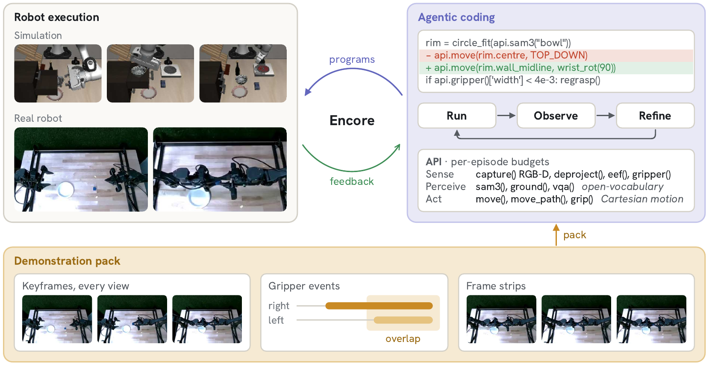
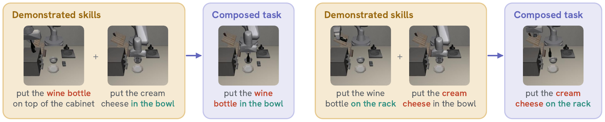
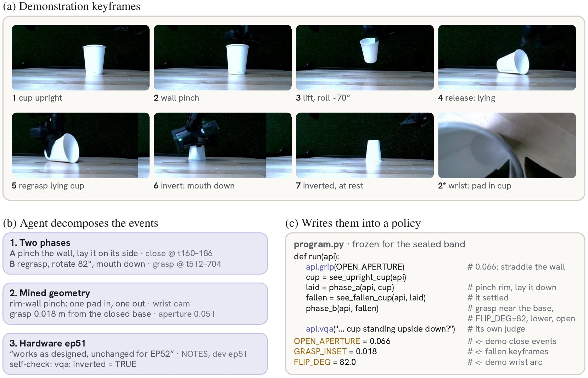
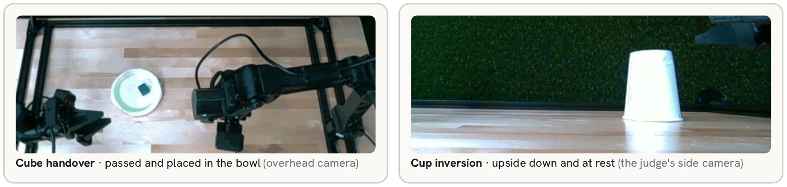

17
Sealed evaluations, no success signal at test time
A robot instruction says what to do, not how. ENCORE gives a coding agent a few demonstrations as evidence to read, not as training data. The agent writes a policy program, refines it over a few rollouts, and freezes it before a sealed test that never shows it the success signal.

A deterministic builder turns each demonstration into a pack: multi-view keyframes at the demonstrator's gripper events, frame strips around each contact, and the full trajectory. It selects frames; it never labels them.
A fresh coding agent studies the pack with analysis code it writes itself, then writes a policy program against a narrow API: sense, perceive, act. It refines the program over 15 development rollouts and checks its own grasps and placements.
The chosen version is frozen and its hash recorded. A coordinator evaluates it once on 50 sealed initial states, judged only by the benchmark's own success check.
On LIBERO-PRO's position and instruction perturbations, the frozen programs succeed on 96.3% of sealed episodes, against 89.3% for ASPIRE run on the same language model and 71.7% as published.
| Object | Goal | Spatial | Mean | ||||
|---|---|---|---|---|---|---|---|
| Pos | Task | Pos | Task | Pos | Task | 6 columns | |
| π0.5 | 17 | 1 | 38 | 0 | 20 | 1 | 12.8 |
| CaP-Agent0 | 22 | 18 | 26 | 17 | 12 | 14 | 18.2 |
| ASPIRE (opus-4.6) | 98 | 95 | 81 | 45 | 51 | 60 | 71.7 |
| ASPIRE (opus-5) | 100 | 100 | 86 | 86 | 84 | 80 | 89.3 |
| ENCORE, no demos | 99.6 | 100 | 92 | 86.6 | 95.8 | 95.2 | 94.9 |
| ENCORE, 3 demos | 100 | 100 | 93 | 90 | 97.8 | 97 | 96.3 |
With demonstrations, the first program already works in 29 of 60 tasks; without them, in one. The demonstrations change how development starts, and the agent reaches its first success in fewer versions.
The sentence asks for the bottom drawer; the demonstrations open the middle one. Without them, the agent concludes the handle cannot be engaged. With them, it copies the demonstrated downward drag and opens the drawer in every run.
On rewritten instructions, each task gets two packs and neither demonstrates its goal. The sentence decides which half of each pack to reuse.

"Build a tower using the wooden blocks and boards" does not say which tower. On five such RoboDojo tasks, no program written without demonstrations succeeded in any of three independent runs: 0 of 750 episodes. The demonstration-free agent solves the manipulation but cannot tell what to build.
On a bimanual Trossen WidowX AI with four RealSense cameras, five demonstrations per task: cup inversion 9 / 10 and cube handover 9 / 10, in sealed trials judged by a person who did not develop the program.


@article{kang2026encore,
title = {ENCORE: Few-Shot Agentic Discovery of Manipulation Strategies},
author = {Kang, Yifan and Wang, Zihan and Fan, Zhiwen and Liu, Bangya},
journal = {arXiv preprint arXiv:2609.37359},
year = {2026}
}